LVLUP-N-COMING
Social Content & Visual Systems
As Graphic Design & Marketing Intern, I create social content and reusable visual assets for LVLUP-N-COMING, from individual posts to templates and icon sets. I focus on clear hierarchy, consistent branding, and layouts that can be adapted across different types of content.
Social Content
A two-slide carousel that pairs a relatable post-graduation concern with a visual introduction to the platform's features.
A two-slide educational post that introduces the benefits of connecting with professors, followed by practical ways students can start building those relationships.
Used photography and bold typography to create a more editorial take on a conversation about overworking.
A product-free post focused on personal growth, using a staircase illustration to visualize progress through new habits, skills, and goals.
Created around the start of the academic year, combining a checklist format with illustration to make a timely student-focused post.
Content Templates
A reusable set of social templates designed for recurring LVLUP-N-COMING content. The system uses consistent typography, hierarchy, color, and branding while leaving enough flexibility for different types of posts.
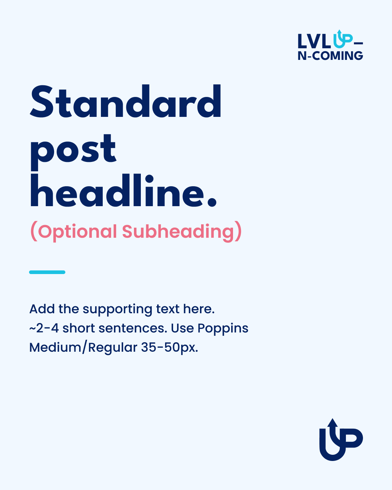
Standard · White · 1080 × 1350
Brand & Visual Assets
I extended the visual system beyond social content with a set of custom icons for recurring topics such as internships, education, mentorship, and messaging. Each icon was designed to share the same visual style and work across the brand's digital materials.
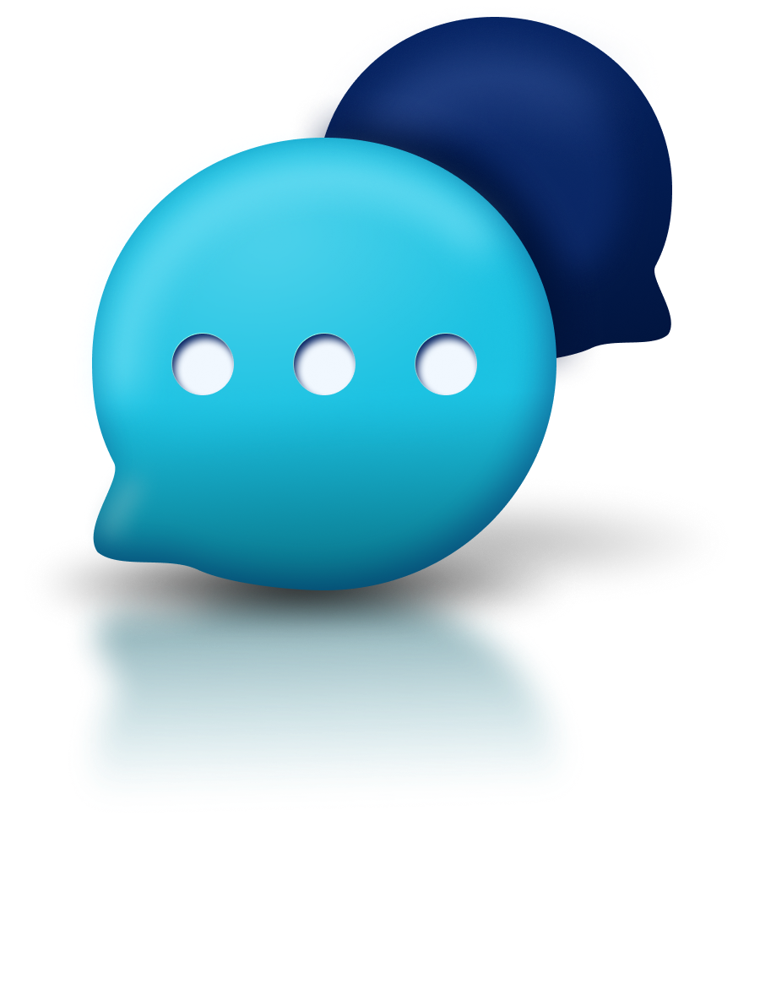
MessagingMascot & Vector Illustration
Shippy is no longer part of LVLUP-N-COMING's current brand direction, but the project demonstrates my experience with character development, reusable vector construction, and designing a character across multiple poses and expressions.
Design Progression · Six iterations from concept to final
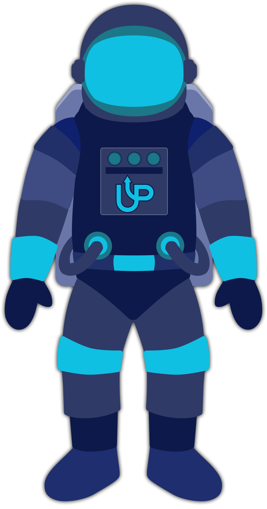
V1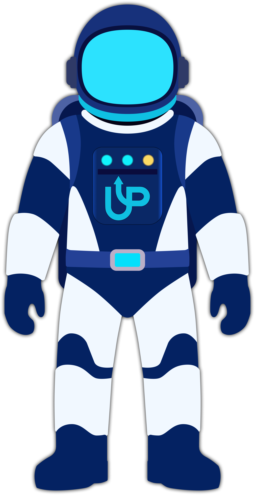
V2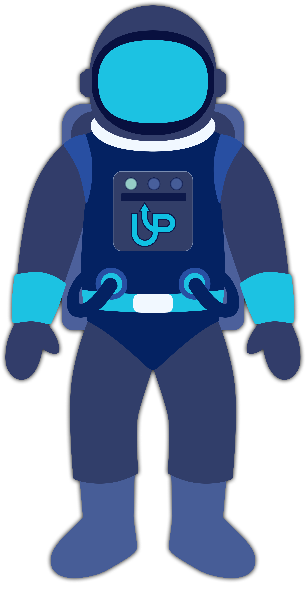
V3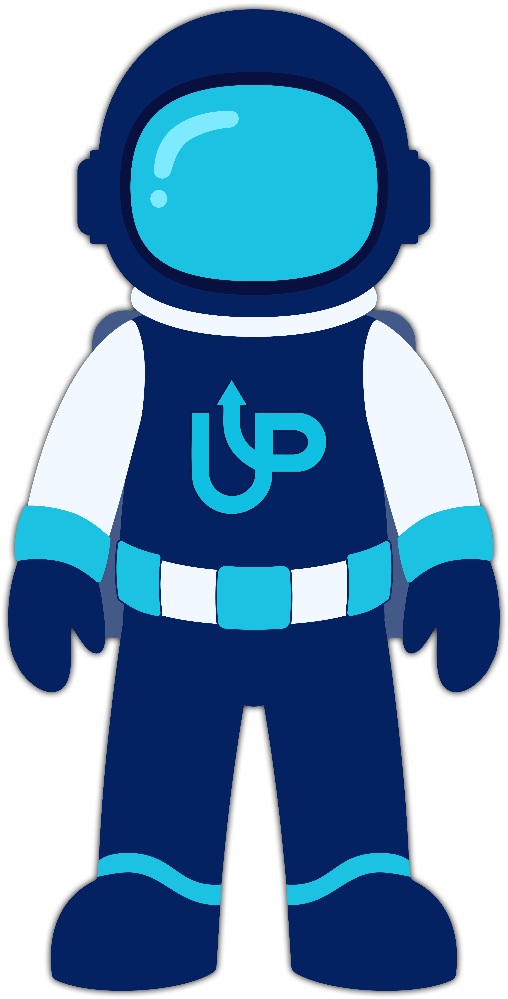
V4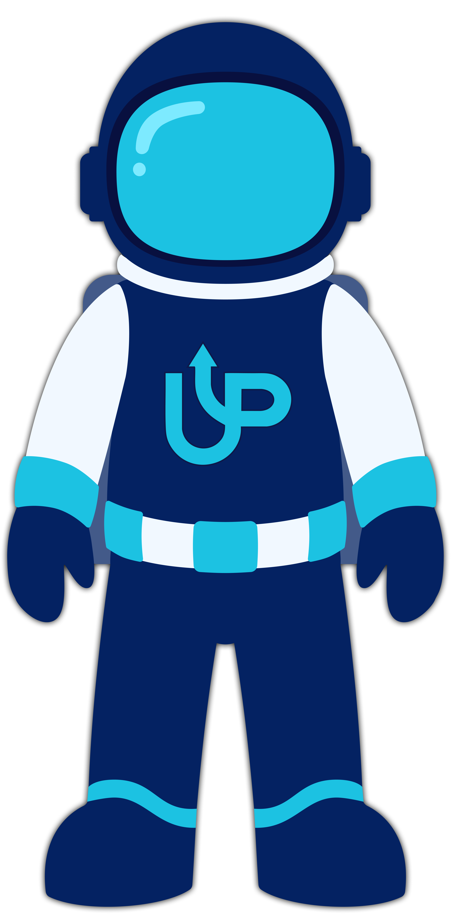
V5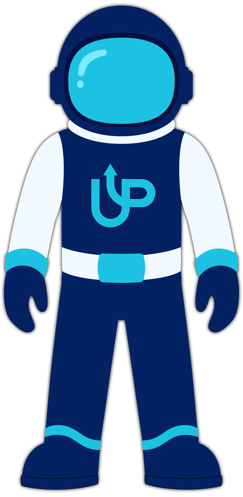
FinalFinal Character · Poses & Walk Cycle
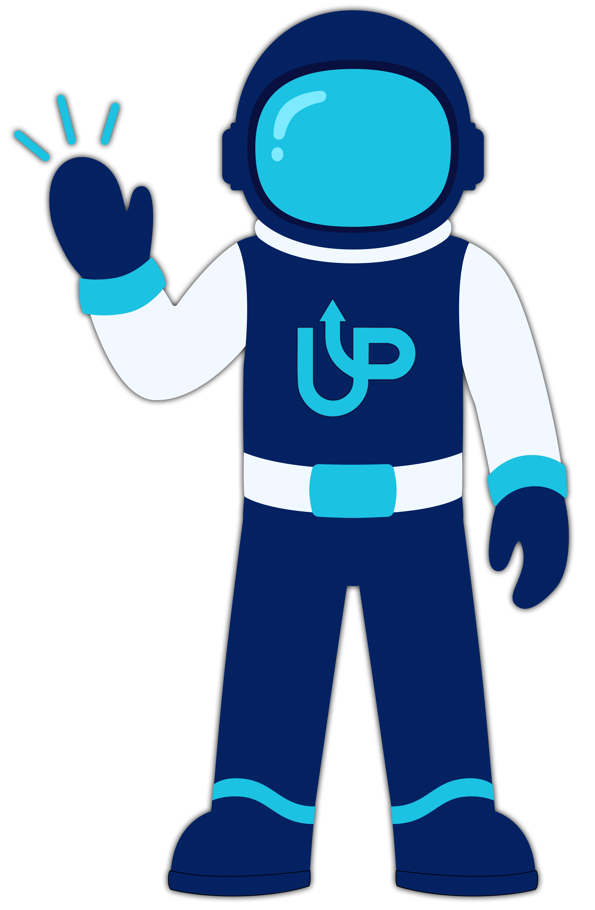
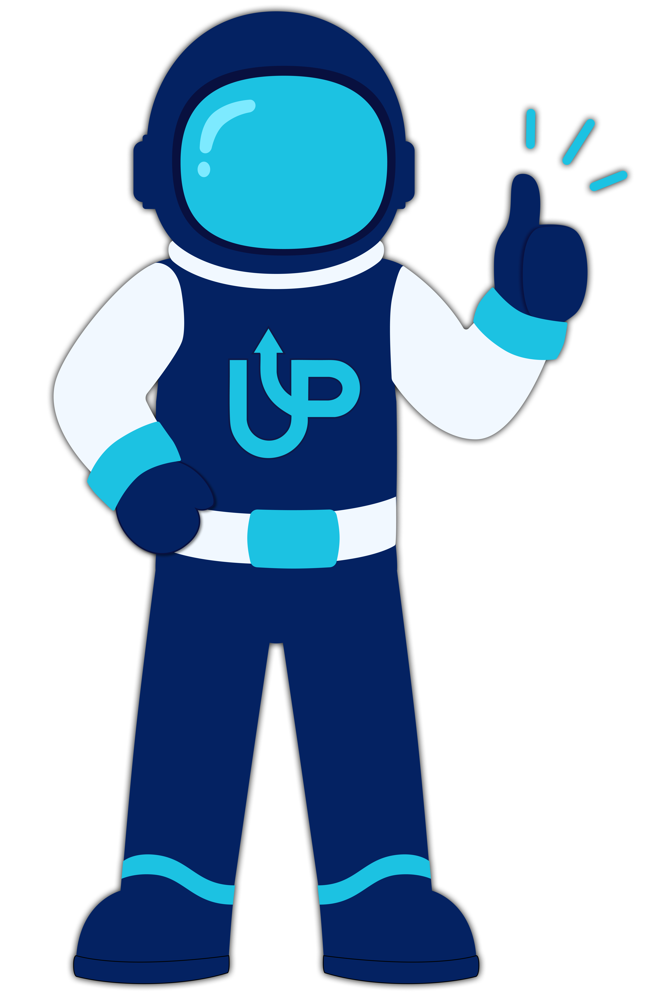
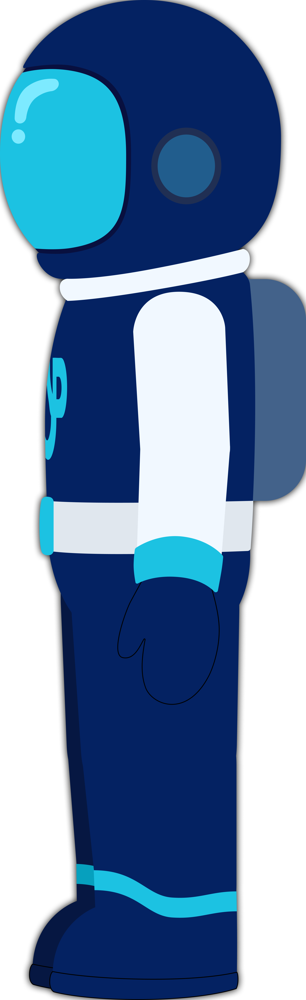